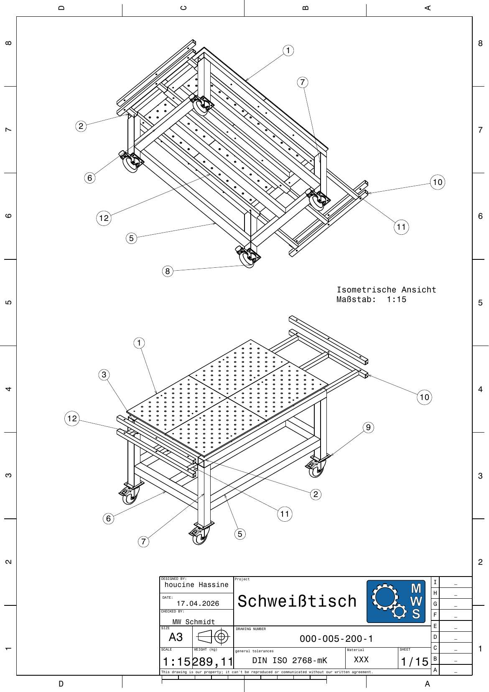

Oberteil 000-005-106-2 – finale Version
Gesamtzusammenbau, Blatt 1/15 · Endstand

Blatt 1/15, Maßstab 1:15, Werkstoff S235JRH, Gewicht laut Schriftfeld 289,11 kg. Designed by Houcine Hassine, Checked by MW Schmidt, 17.04.2026.
Deutlicher Unterschied zur Vorversion: Die Platten liegen jetzt in einer 2 × 2 Anordnung (statt 3 nebeneinander) → die Arbeitsfläche wird breiter statt nur länger. Zwei innenliegende Längsträger stützen die Plattenstöße in der Mitte.
🔄 Der Entwicklungssprung im Oberteil
| Merkmal | 000-005-104-1 (10.04.) | 000-005-106-2 (17.04.) | Δ |
|---|---|---|---|
| Lochplatten | 3 | 4 | +1 |
| Plattenanordnung | 3 in Reihe | 2 × 2 | umgestellt |
| Längsträger außen | 2 × 1500 | 2 × 1580 | +80 mm |
| Querträger | 2 × 500 | 2 × 820 | +320 mm |
| Längsträger innen | 1 × 1330 | 2 × 1420 | +1 Stück |
| Gewicht Rahmen | 18,63 kg | 25,61 kg | +37 % |
Zusammengefasst: Der Querträger wuchs um 320 mm – genau der Betrag, der eine zweite
Plattenreihe ermöglicht. Der Rahmen wurde dafür 37 % schwerer, die nutzbare
Arbeitsfläche stieg aber von 3 auf 4 Platten (+33 %).
📐 Das Zeichnungspaket 000-005-200-1
289,11kg Gesamtgewicht (Schriftfeld)
40Teile, 12 verschiedene
15Blätter, Format A3
Werkstoffe: S235JRH (Rohre) · S355MC (Lochplatten). Toleranzen: DIN ISO 2768-mK, Kanten DIN ISO 13715, Oberfläche Rz 6,3.
⚖️ Gewichtsverteilung der Baugruppen
| Plattenpaket (4× Lochplatte) | 145,88 kg |
| Oberer Rahmen | 55,40 kg |
| Erweiterungssystem | 50,32 kg |
| Untergestell + Rollen | 37,51 kg |
Die Lochplatten machen rund die Hälfte des Gesamtgewichts aus – deshalb sind Rollen und ein steifer Rahmen entscheidend.
🗂️ Alle 15 Zeichnungsblätter im Überblick
| Blatt | Bezeichnung | Kerninhalt |
|---|---|---|
| 1/15 | Gesamtzusammenbau | Isometrische Ansichten 1:15 · Positionen 1–12 · 289,11 kg |
| 2/15 | Hauptstückliste | 12 verschiedene Teile · 40 Teile gesamt |
| 3/15 | Oberteil-Baugruppe | 4 Lochplatten + Rahmen 80×80×3 · 10 Teile |
| 4/15 | Plattenpaket | 4× Lochplatte D16 800×500×12 · S355MC · 145,88 kg |
| 5/15 | Oberer Rahmen | Rohre 1580 / 820 / 1420 · Abstand 320 mm · 55,40 kg |
| 6/15 | Untergestell | Beine 660 · 4 Rollen · Bleche 145×117 · 37,51 kg |
| 7/15 | Erweiterungssystem | Rohre 40×40×3 und 50×50×3 · 13 Teile · 50,32 kg |
| 8/15 | Auszug-Baugruppe | Rohr 40×40×3 · Abstände 350 / 80 mm · 14,66 kg |
| 9/15 | Führungsrohre | 3× Rohr 50×50×3 – 1580 · Abstand 340 mm · 21,00 kg |
| 10/15 | Rohr 80×80×3 – 1580 | 6 Bohrungen · Teilung 740/390/40 · 11,45 kg |
| 11/15 | Rohr 80×80×3 – 820 | 2 Bohrungen · Abstand 360 mm · 5,95 kg |
| 12/15 | Rohr 80×80×3 – 1420 | 4 Bohrungen · 660/310 mm · 10,30 kg |
| 13/15 | Rollenblech 145×117×5 | 4× Ø11 · Raster 105 × 77,5 mm · 0,65 kg |
| 14/15 | Rohr 50×50×3 – 1580 | 2 Bohrungen · Abstand 100 mm · 7,00 kg |
| 15/15 | Rohr 40×40×3 – 980 | 3× Ø12 · Abstand 80 mm · 3,40 kg |
Wichtige Änderung gegenüber den früheren Entwürfen: jetzt 4 Lochplatten (statt 3),
Rohrprofile durchgängig ×3 mm Wandstärke, Beine nur noch 660 mm (Rollen bringen die
Höhe), Fußblech 145 × 117 × 5 mm. Auf den nächsten beiden Seiten folgt die vollständige
Prüfung dieser 15 Blätter.